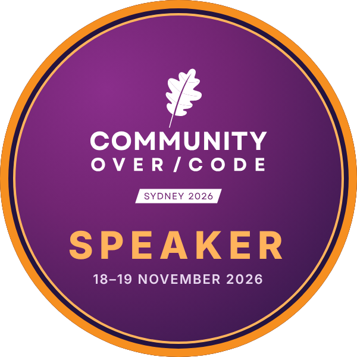

Speaker, Community Over Code Sydney 2026
Issued by Community Over Code Sydney 2026 organisers to the speakers at Community Over Code Sydney 2026, 18 to 19 November 2026, at the Collider, Sydney.
Speakers
- Phillip Kruger
- Ivar Grimstad
- Gerrit Grunwald
- Frederik Pietzko
- Varsha Das
- Mihaela Gheorghe-Roman
- Daniel Sagenschneider
- Ming-Yen Chung
- PoAn Yang
- Bence Kosztolnik
- Peter Szucs
- Chu Cheng Li
- Quanlong Huang
- Arpit Bandejiya
- Wilfred Spiegelenburg
- Jean-Frederic Clere
- Patrick Catanzariti
- Paul King
- Charles Connell
- Yongjae Lee
- Sheriff Manzoor F
- Uroš Bojanić
- Hrithik Kumar
- Sumit Maheshwari
- Jarek Potiuk
- Paul Brebner
- Martin Toshev
- Brett Morgan